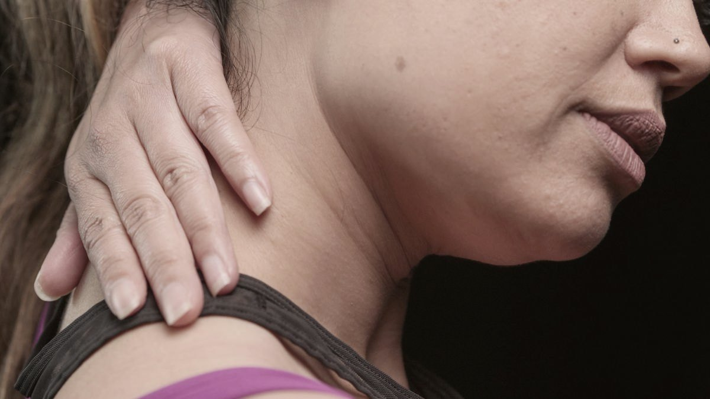
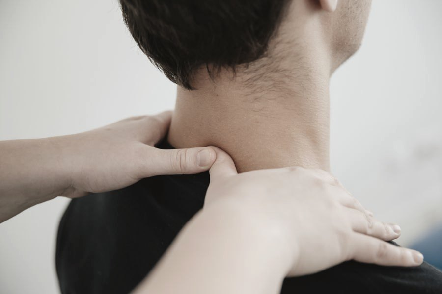
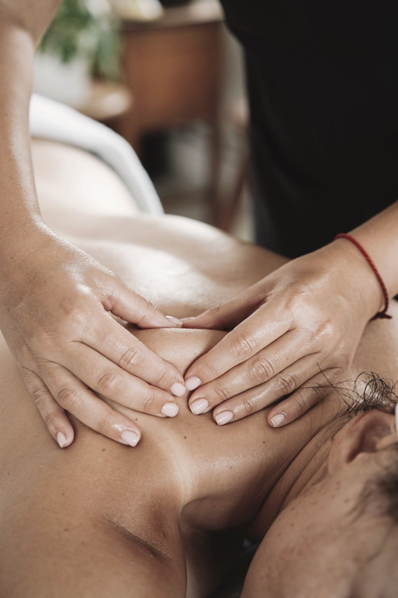
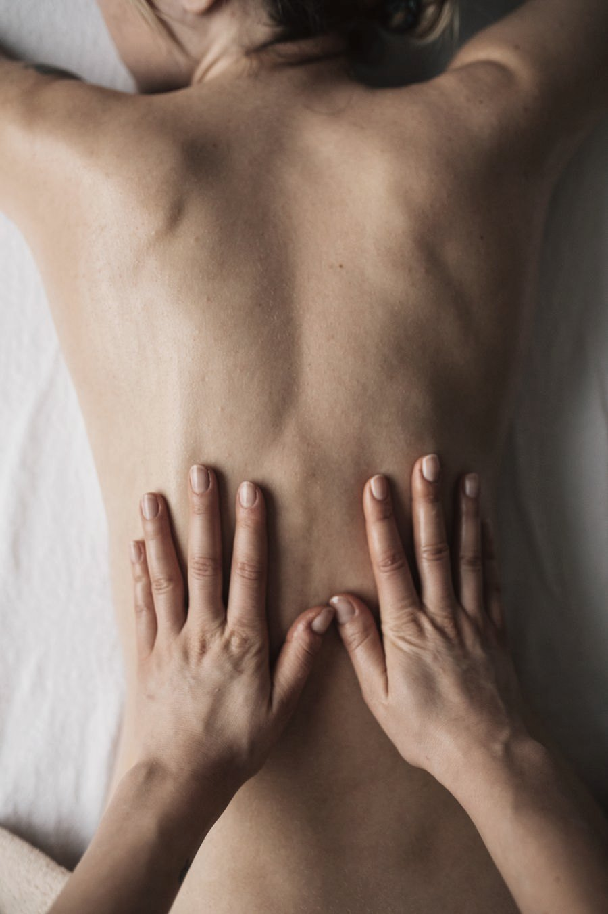
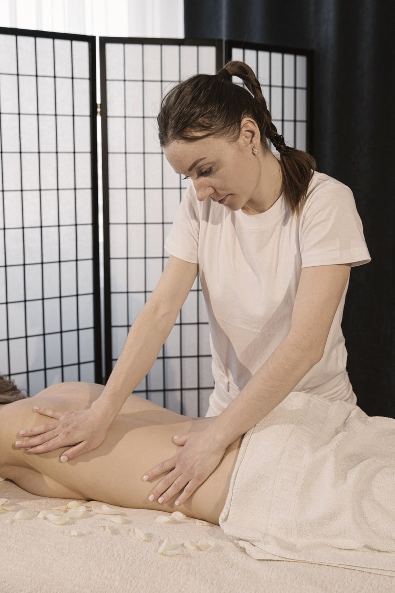
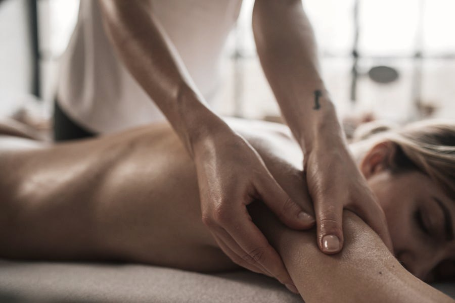

Massoterapia terapêutica · Manaus
Não trabalhamos com pacote fechado. A sessão começa por uma pergunta simples — onde e há quanto tempo — e a técnica sai da resposta, não de uma tabela.

Quase toda queixa começa com esse gesto.
Depois de 112 atendimentos avaliados, a conta é sempre parecida: pescoço, ombro, lombar ou a tensão difusa que não tem endereço fixo. Cada um pede pressão, ritmo e número de sessões diferentes.
Dor ao acordar, dente cerrado durante o dia, dor de cabeça que começa na têmpora.
Costuma ser o estresse encontrando a saída pelo músculo da face. Vem junto com sono ruim e respiração curta.
Relaxante + liberação facialPescoço travado, dificuldade para virar a cabeça, formigamento que desce pelo braço.
Horas de tela, travesseiro errado, celular no colo. É a queixa que mais aparece e a que mais responde rápido.
Terapêutica profunda
Aquele nó entre o pescoço e o ombro que você aperta sozinha o dia inteiro.
Postura de trabalho e carga emocional acumulada. Some por dois dias e volta — sinal de que falta soltar a fáscia, não só o músculo.
Liberação miofascial
Dor ao levantar da cadeira, rigidez de manhã, incômodo que piora no fim do dia.
Sedentarismo, sobrecarga ou compensação de outra região. Exige avaliação antes: nem toda lombar é caso de massagem.
Terapêutica + alongamento assistido
Cerca de 60 minutos, do primeiro ao último passo
Onde dói, há quanto tempo, o que piora. Cinco minutos que definem o resto.
Teste de amplitude e palpação para achar o ponto real — que raramente é onde você aponta.
Pressão ajustada ao seu limite, com retorno o tempo todo. Dor durante não é sinal de que funciona.
O que fazer em casa e quando voltar. Se o caso for clínico, a orientação é procurar um médico.


Sobre
A Stabilise atende no Parque 10 quem convive com dor — não apenas quem quer relaxar uma tarde. A diferença aparece na primeira conversa: a sessão só começa depois da avaliação, e o número de encontros é estimado na hora, com honestidade.
São 112 avaliações no Google sem uma única nota abaixo da média. Em qualquer segmento isso é raro; em atendimento ao corpo, é a única prova social que vale.
Ambiente maravilhoso, profissionais de excelência, atendimento nota 10000.Avaliação no Google
Contato
Manda uma mensagem dizendo onde dói e há quanto tempo. A partir disso a gente já indica quanto tempo de sessão o seu caso pede.